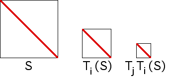

| The diameter of a set is the maximum distance
between any pair of points in the set. |
| For example, the diameter of a circle is just
the common notion of diameter; the diameter of a square is the diagonal length of the
square. |
|
| Because all the IFS rules are contractions,
the diameter of a region of address length
N goes to 0 as N goes to infinity. |
| We illustrate this with the four transformations |
| T3(x, y) = (x/2, y/2) + (0, 1/2) |
T4(x, y) = (x/2, y/2) + (1/2, 1/2) |
| T1(x, y) = (x/2, y/2) |
T2(x, y) = (x/2, y/2) + (1/2, 0) |
|
| As an IFS, these generate the unit square, S. We see |
|  |
| diam(S) = √2 |
| diam(Ti(S)) = (√2)/2 |
| diam(TjTi(S)) = (√2)/4 |
| and in general |
| diam(TiN...Ti1(S)) =
(√2)/(2N) |
| Consequently, diam(TiN...Ti1(S)) → 0
as N → ∞. |